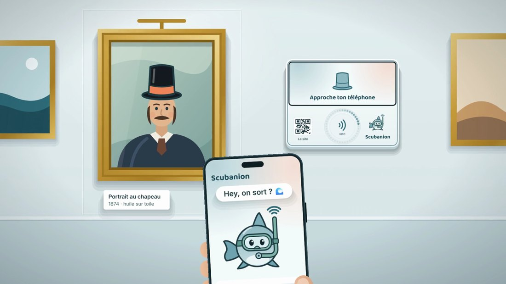
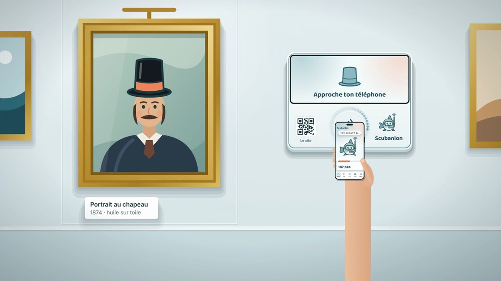
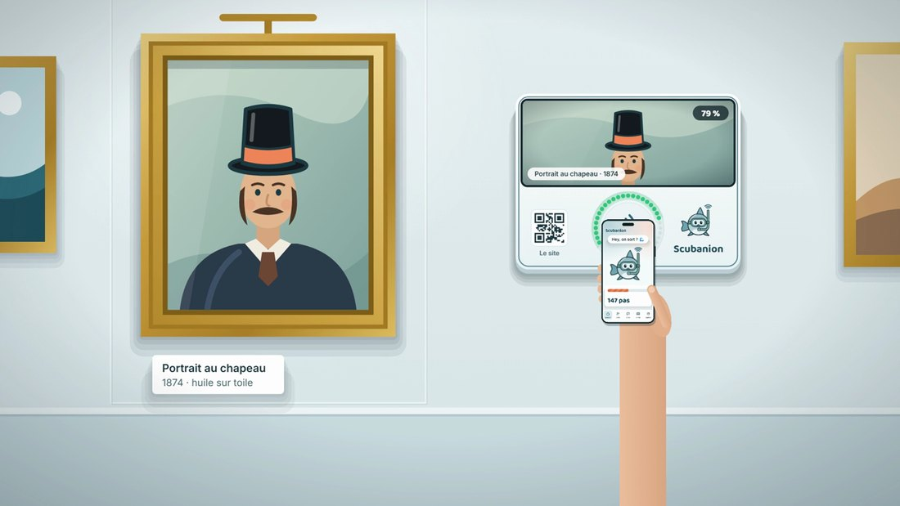
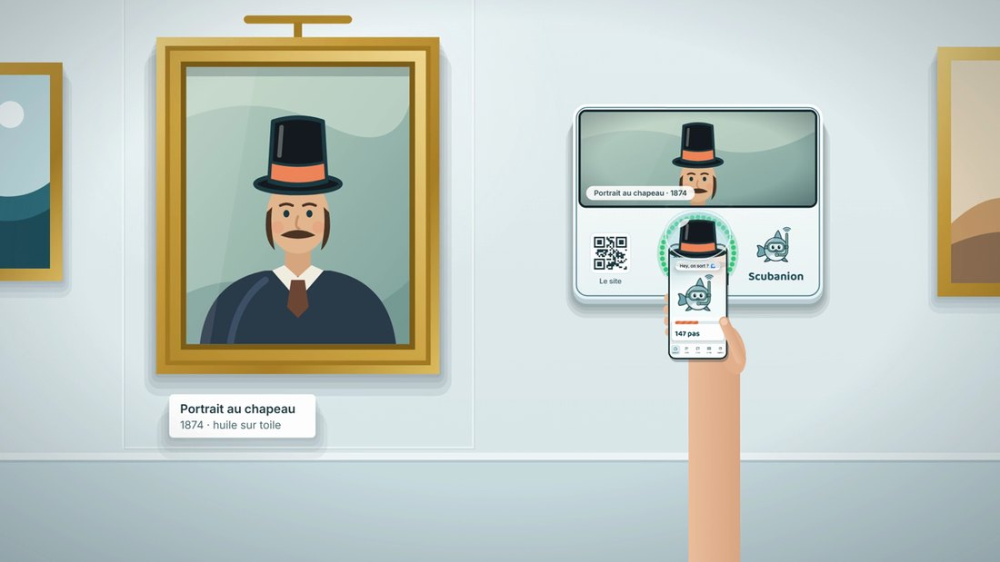
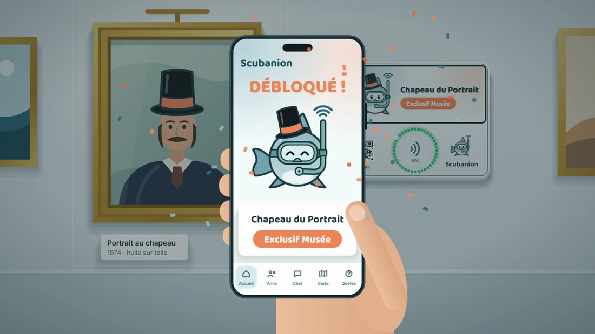
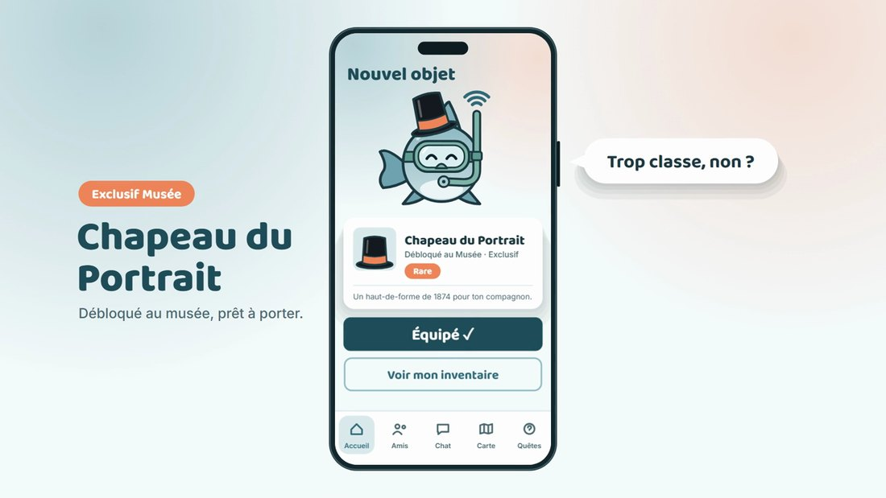
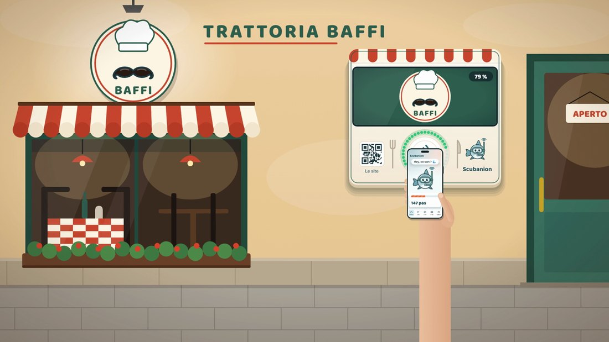

L'histoire racontée en pictogrammes et en deux films, puis la Toolbox Persona
du cours, appliquée à la fixation du prix — avec les résultats des
sept entretiens menés le 14 octobre.
Récit
6 temps, en pictogrammes
Films
2 animations de 15 s, livrées en MP4
Outil
Toolbox Persona — cours p. 145
Entretiens
7 personnes, le 14/10/2026
Prix retenu
1,99 € le skin · zone 0,99 — 2,49 €
Version
2.0 du 14/10/2026
« Il ne grandit que si toi tu sors. »
1Raconter l'histoire
Avant de parler de fonctionnalités, il faut pouvoir raconter le produit à quelqu'un
qui ne connaît rien au projet. Voici notre histoire en six temps. Elle suit
Léa, 20 ans, étudiante à Paris — l'un des trois personas du
Business Model Canvas.
1. Le creux
3 500 pas par jour, 5 h d'écran, seule au milieu de deux millions de gens.
2. La rencontre
Elle installe l'app, choisit son compagnon et son ambition.
3. Le premier pas
Une quête à moins de 500 m. Elle sort « juste pour voir ».
4. La borne
Au musée, elle approche son téléphone : un objet exclusif tombe.
5. L'autre
Elle croise un joueur : les deux compagnons gagnent un bonus.
6. L'habitude
Guilde du 13e, classement du quartier. Elle sort sans y penser.
Le ressort du récit
L'histoire ne fonctionne que si le transfert de responsabilité est
clair : Léa ne marche pas pour elle, elle marche pour quelqu'un d'autre. C'est le
mécanisme du Tamagotchi, et c'est précisément ce que les applications de santé
n'ont pas. Le reste — quêtes, bornes, guildes — n'est là que pour donner à ce lien
des occasions de s'exprimer dans le monde réel. Si l'on retire le compagnon, il ne
reste qu'un podomètre ; si l'on retire les bornes, il ne reste qu'un jeu d'écran.
Le parcours, du premier contact à l'habitude
Étape
Ce que vit l'utilisateur
Ce qu'on doit réussir
Notoriété
Elle voit une borne allumée dans un lieu qu'elle fréquente, ou une amie lui en parle.
Être visible là où elle passe déjà.
Évaluation
Elle essaie la borne sans compte, juste pour voir ce qui se passe.
Ne rien demander avant d'avoir montré quelque chose.
Installation
Téléchargement gratuit, choix du compagnon et de l'ambition, en moins de deux minutes.
Aucune carte bancaire, aucun formulaire long.
Première valeur
Une quête à moins de 500 m, réussie le jour même.
Le premier succès doit tomber le premier jour.
Habitude
Série de jours consécutifs, guilde de quartier, rencontres réelles.
Donner une raison de revenir qui ne soit pas une notification.
2Les deux films
Deux animations de quinze secondes racontent le moment central du produit : le
passage en borne. Elles sont livrées avec ce dossier en MP4, dans le dossier
videos/. La première se déroule dans un musée, la
seconde devant un restaurant partenaire — un lieu à billetterie et
un commerce de proximité, les deux familles de partenaires du modèle économique.
Storyboard — les six temps du film

1
On avance, téléphone en main
La borne est au repos à côté de l'œuvre. Le compagnon demande : « Hey, on sort ? »

2
On approche le téléphone
Lecture NFC. Aucun compte à saisir, aucun code : le geste est celui d'un paiement sans contact.

3
La borne reconnaît le lieu
L'œuvre s'affiche à l'écran, l'anneau de LED se remplit jusqu'à 100 %. Le passage part en MQTT vers le serveur.

4
L'objet sort de l'œuvre
Le chapeau du portrait se détache du tableau, descend et entre dans le téléphone. C'est le plan qu'on partage.

5
« Débloqué ! »
Le téléphone revient vers nous. L'objet est exclusif à ce lieu : on ne peut l'avoir qu'en étant venu.

6
On l'équipe
Le compagnon porte le chapeau du musée. La récompense est visible par les autres joueurs : elle raconte où l'on est allé.

Second film — Trattoria Baffi. Même mécanique, autre type de lieu : un commerce de proximité, dont le logo devient la récompense (« Moustache du Chef »). Montrer les deux films l'un après l'autre prouve que le dispositif se décline à n'importe quel partenaire, sans redéveloppement.
Pourquoi un film plutôt qu'un discours
Le passage en borne dure dix secondes et met en jeu trois objets — un
téléphone, une borne, un serveur. C'est très long à expliquer et immédiat à
regarder. Le film est aussi notre principal outil de communication : il sert
de démonstration quand la borne n'est pas là, d'argument de vente auprès des
partenaires, et de contenu pour les réseaux du compagnon.
Fiche technique
Durée
15 s chacun
Format
MP4 · 1920 × 1080 · 30 i/s
Poids
≈ 3 Mo par film
Son
aucun — lisible en silence
4Résultats des entretiens
Sept personnes ont été interrogées en message privé individuel, le 14/10/2026.
Cinq réponses sont exploitables et dans la cible — c'est le minimum
demandé par le cours. Une sixième, hors tranche d'âge, est conservée à part ; une
septième a été écartée. Les réponses brutes et les règles de lecture sont dans
docs/r501/outils/toolbox-prix.py.
Les réponses
Personne
Âge
Ville
Pas/jour
Budget loisirs
Doute en dessous de
Trop cher à partir de
Radu1
19
Aurillac (15)
—
100 €
0,49 €
6,99 €
Stacy
20
Saint-Laurent-du-Var (06)
4 000
30 €
0,99 €
2,99 €
Damien L.
20
Cabris (06)
8 000
50 €
0,49 €
3,99 €
Damien N.2
19
Nice (06)
10 500
—
non exprimé
3,99 € (inclus)
Nathan
19
Nice (06)
5 000
60 €
0,49 €
3,99 €
Damien B.3hors cible
16
Le Mans (72)
6 000
5 €
0,99 €
2,99 €
1Radu : podomètre jamais activé sur son téléphone · 2Damien N. : variable, n'a pas su chiffrer ; a contesté la question : pour un objet décoratif, un prix bas ne fait pas douter de la qualité, puisqu'il ne change rien au jeu · 3Damien B. : podomètre désactivé, chiffre donné de mémoire ; entre 0 et 10 €
Trois décisions de lecture, assumées
Diego, 17 ans, est écarté. Il situait le « trop cher » à 8 € et
le « doute sur la qualité » à 5 €, puis a répondu « 5 € 8 € » sans trancher
lorsqu'on lui a demandé de préciser. Une fourchette inversée n'est pas
exploitable, et il est hors de la tranche d'âge visée. Mieux vaut un entretien
refait qu'une réponse interprétée.
Damien B., 16 ans, est conservé mais hors cible. Il est en
dessous des 18-30 ans visés, donc exclu du calcul. Nous l'affichons quand même :
écarter une réponse parce qu'elle dérange serait une faute, et la sienne
confirme la fourchette trouvée.
Damien N. n'a pas de borne basse. Il a contesté la deuxième
question, et son objection est juste : pour un objet purement décoratif, qui ne
change rien au jeu, un prix bas ne fait pas douter de la qualité. Nous le comptons
donc comme acceptant tous les niveaux sous son maximum. Cela n'affecte que la
colonne 0,49 €, qui n'est pas couverte à 100 % de toute façon.
La grille
Personne
0,49 €
0,99 €
1,49 €
1,99 €
2,49 €
2,99 €
3,99 €
4,99 €
6,99 €
9,99 €
Radu
trop
trop
Stacy
doute
trop
trop
trop
trop
trop
Damien L.
trop
trop
trop
trop
Damien N.
trop
trop
trop
Nathan
trop
trop
trop
trop
Personnes couvertes
4 / 5
5 / 5
5 / 5
5 / 5
5 / 5
4 / 5
2 / 5
1 / 5
0 / 5
0 / 5
Dans la fourchette acceptable Zone de chevauchement Trop bas : doute sur la qualité Trop cher : pas d'achat
5Lecture et prix retenu
Combien de personnes chaque prix convainc-t-il ?
Nombre de personnes, sur les cinq de la cible, pour qui le prix est
acceptable. Quatre niveaux font l'unanimité : de 0,99 € à 2,49 €.
La fourchette de chacun
Chaque barre est l'intervalle que la personne juge acceptable. La bande
verte est leur intersection. Damien B., hors cible, est en clair : sa fourchette
tombe entièrement dans la zone commune.
Ce que les entretiens disent
La zone de chevauchement va de 0,99 € à 2,49 € : quatre
niveaux conviennent aux cinq personnes de la cible.
Au-delà de 2,99 €, ça décroche vite : 4 personnes sur 5 à
2,99 €, plus que 2 sur 5 à 3,99 €, et une seule à 4,99 €.
Personne n'accepte 6,99 € ni 9,99 €. Le haut de l'échelle est
mort : il n'y a pas de marché pour un skin au-delà de 5 € sur cette cible.
Le bas de l'échelle inquiète peu. Trois personnes sur cinq
acceptent 0,49 €. Le mécanisme de doute sur la qualité, central dans la méthode,
joue faiblement sur un objet décoratif.
Prix retenu
1,99 €
Zone de chevauchement 0,99 € — 2,49 €
Pourquoi 1,99 € et pas 2,49 €
2,49 € est le haut de la zone d'unanimité : ce serait le prix qui rapporte le plus
en conservant 100 % de couverture. Nous retenons pourtant 1,99 €,
pour deux raisons. D'abord, 2,49 € est exactement le plafond de Stacy : au
moindre optimisme dans sa réponse, nous la perdons, et la couverture n'est plus
réelle. Ensuite 1,99 € laisse un cran de marge des deux côtés, ce qui autorise une
remise ponctuelle à 1,49 € et une gamme rare à 2,49 € sans jamais sortir de la zone.
Un prix qui tient sous la pression vaut mieux qu'un prix optimal en théorie.
Trois enseignements inattendus
Le podomètre n'est pas activé
Deux personnes sur sept n'ont pas su donner leur nombre de pas,
parce que le capteur n'est pas actif sur leur téléphone. C'est un signal produit
sérieux : notre promesse repose entièrement sur ce capteur. L'activation doit
être une étape explicite et guidée de la mise en route, pas une permission
demandée en passant.
La question du prix bas s'applique mal
L'objection de Damien N. est fondée. La deuxième question du cours suppose que
le prix signale la qualité ; pour un objet décoratif sans effet sur le jeu, ce
lien est faible. Trois personnes sur cinq acceptent d'ailleurs le niveau le plus
bas. Nous gardons la méthode telle que le cours la définit, mais
nous notons que sa borne basse est peu informative dans ce cas précis.
Le persona Léa est confirmé, les deux autres non
L'échantillon valide Léa : 19-20 ans, 30 à 60 € de budget
loisirs, 4 000 à 8 000 pas par jour. En revanche Yanis (27 ans) et
Camille (34 ans) ne sont représentés par personne : toutes les réponses
viennent de 16-20 ans. Ces deux personas restent des hypothèses.
Les limites, et la suite
Cinq réponses, c'est le minimum du cours, pas un échantillon
statistique. On obtient un ordre de grandeur et un point de départ, pas
une certitude.
L'échantillon n'est pas sur le marché pilote. Les réponses
viennent des Alpes-Maritimes, du Cantal et de la Sarthe, alors que le Business
Model Canvas vise Paris intra-muros. Le prix d'un cosmétique varie peu d'une ville
à l'autre, mais le pouvoir d'achat parisien est plus élevé : notre
fourchette est donc probablement prudente. À retester sur le territoire visé, ou à
rapprocher le territoire de notre terrain réel.
La méthode mesure une intention déclarée. Entre dire « j'achète
à 1,99 € » et sortir sa carte, il y a un écart que seul un vrai lancement mesure.
Prochaine étape : reposer les deux questions aux 20 testeurs du
campus (action A6 de la charte, échéance 29/11), cette fois après
qu'ils auront utilisé l'application une semaine. Un joueur attaché à son compagnon
n'a pas la même disposition à payer qu'un inconnu à qui on montre une capture.